|
4-1-4-1
|
Uruguay | 0 | - | 1 | Spain |
4-2-3-1
|
| HT 0-1 | ||||||
|
FIFA World CupSaturday 27 June 2026
|
||||||
- Venue
- Estadio Guadalajara
- Attendance
- 45,065
- Referee
- Ismail Elfath
Substitution45'
M. Ugarte
N. de la Cruz
Substitution46'
F. Muslera
S. Rochet
Yellow card54'
J. Sanabria
Substitution57'
F. Valverde
F. Viñas
Yellow card58'
G. Varela
Substitution70'
J. Sanabria
B. Rodríguez
Yellow card90+3'
N. de la Cruz
Red card90+5'
A. Canobbio
Whistle45+9'
45+9'
Goal42'
Álex Baena
Assist: Marcos Llorente
Yellow card46'
Álex Baena
- 2
Substitution60'
Pedri
Fabián Ruiz
Mikel Merino
Dani Olmo
Substitution66'
Álex Baena
Yéremy Pino
- 2
Substitution76'
Lamine Yamal
Nico Williams
Mikel Oyarzabal
Ferran Torres
Uruguay | |
|---|---|
Goalkeeper | |
| 23 | F. Muslera 46' |
Defender | |
| 3 | S. Cáceres |
| 13 | G. Varela 58' |
| 16 | M. Olivera |
| 25 | J. Sanabria 54'70' |
Midfielder | |
| 5 | M. Ugarte 45' |
| 6 | R. Bentancur |
| 8 | F. Valverde 57' |
| 14 | A. Canobbio 90+5' |
| 20 | M. Araújo |
Forward | |
| 9 | D. Núñez |
Substitutes | |
| 1 | S. Rochet 46' |
| 7 | N. de la Cruz 45'90+3' |
| 18 | B. Rodríguez 70' |
| 21 | F. Viñas 57' |
Spain | |
Goalkeeper | |
| 23 | Unai Simón |
Defender | |
| 5 | Marcos Llorente |
| 14 | Aymeric Laporte |
| 22 | Pau Cubarsí |
| 24 | Marc Cucurella |
Midfielder | |
| 6 | Mikel Merino 60' |
| 15 | Álex Baena 42'46'66' |
| 16 | Rodri |
| 19 | Lamine Yamal 76' |
| 20 | Pedri 60' |
Forward | |
| 21 | Mikel Oyarzabal 76' |
Substitutes | |
| 7 | Ferran Torres 76' |
| 8 | Fabián Ruiz 60' |
| 10 | Dani Olmo 60' |
| 11 | Yéremy Pino 66' |
| 17 | Nico Williams 76' |


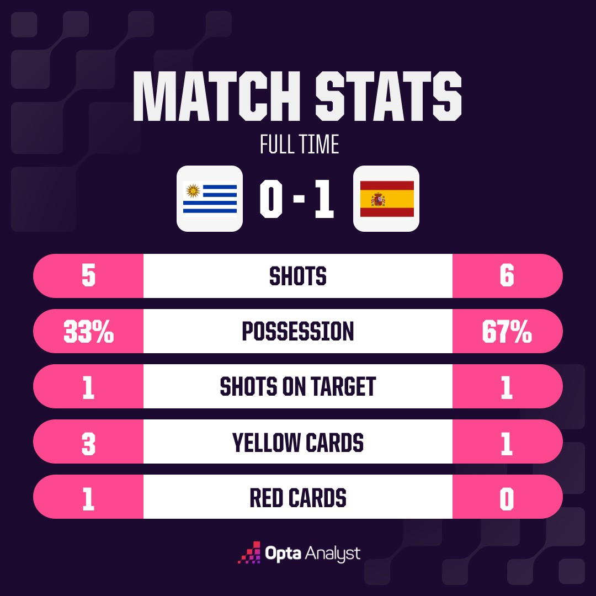
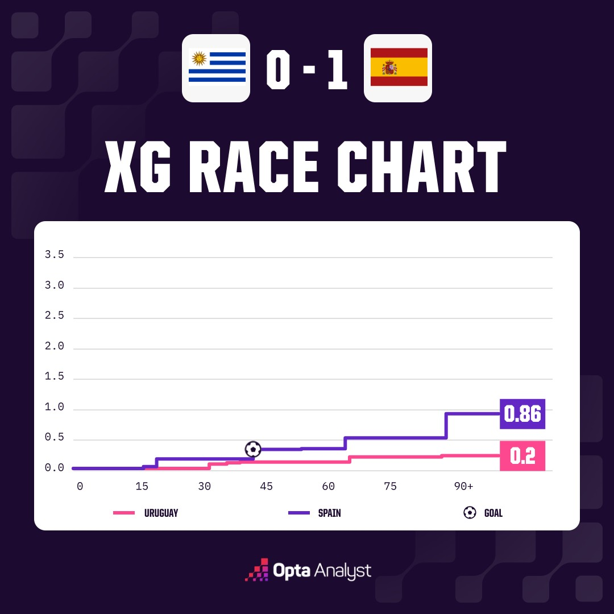
98'
Uruguay have failed to win in their last 3 games in the FIFA World Cup, their last joint longest winless streak was from 6th July 2018 to 28th November 2022.
98'
Spain are undefeated in their last 4 games in the FIFA World Cup, their last longer unbeaten streak was from 23rd June 2014 to 27th November 2022, a run of 7 games.
98'
Spain have kept a clean sheet in each of their last 4 games in the FIFA World Cup, a run of 494 minutes without conceding a goal.
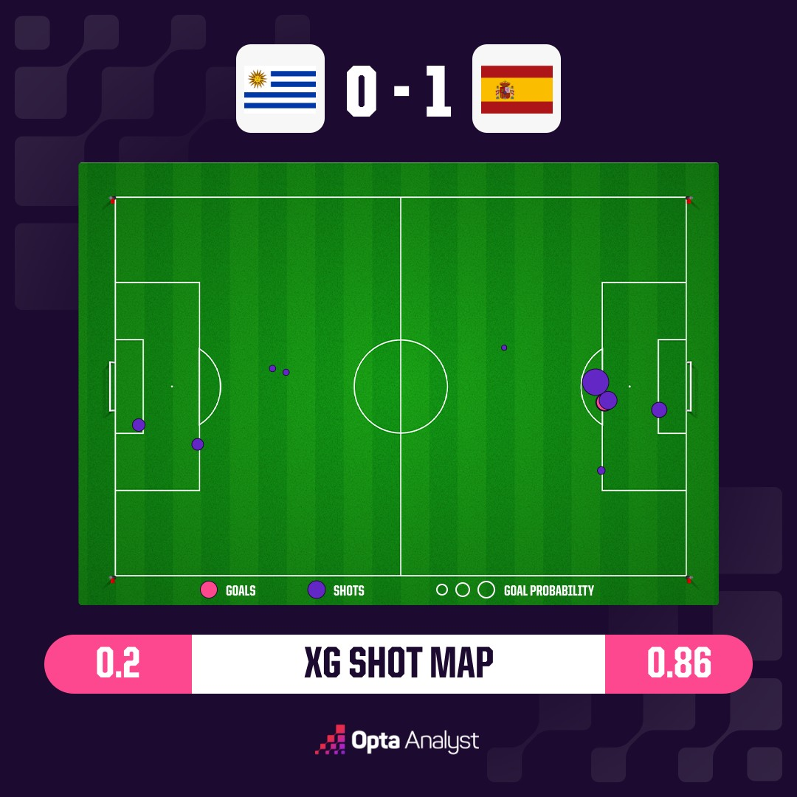
90+7'
Spain WIN! It’s all over at Estadio Guadalajara, with Spain coming out on top 0-1 over Uruguay, thanks to goal from Álex Baena.
90+6'
This game is certainly in a bit of a lull now, with neither team having had an attempt at goal in the past 10 minutes. It could do with something to spark it into life. Uruguay have had more possession during the quiet spell, but are yet to do much with it.
90+5'
Agustín Canobbio has received a red card - Uruguay's first sending off in the 2026 FIFA World Cup , and their first since 14th June 2014 against Costa Rica.
90+5'
SENDING OFF! What a blow for Uruguay, who had been hoping to claw their way back into this contest but are now staring down the barrel of a defeat after Agustín Canobbio receives a red card. The odds are stacked against them now!
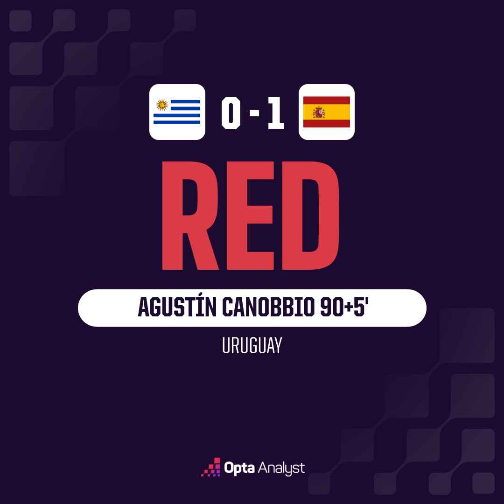
90+5'
A free-kick to Spain, as Agustín Canobbio goes in and fouls Pau Cubarsí. However, Uruguay will not mind giving one away in this area too much, with plenty of distance to their goal.
90+3'
BOOKING! Yellow card for Nicolás de la Cruz, who is penalised for a foul. The referee waves away their remonstrations, and now they will have to be careful.
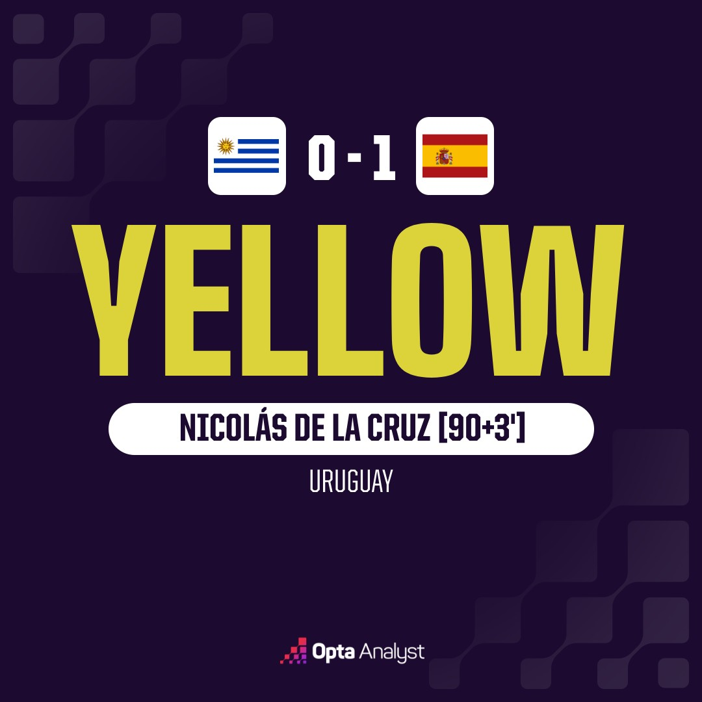
90+3'
A foul from Nicolás de la Cruz on Nico Williams sees Spain win a free-kick, but it is not in a dangerous position, so Uruguay should be confident they can defend it easily enough.
90+2'
No luck – it’s offside! Yéremy Pino looked to dart in behind and get on the end of a pass, yet they just went too early, and the flag is up to signal offside.
90+1'
Federico Viñas goes in on Dani Olmo and concedes a foul. The free-kick is not in a particularly dangerous area from Uruguay’s viewpoint, though.
86'
What a miss! That is a bad finish from Ferran Torres, who has been unable to convert from a good opportunity, seeing a big chance for Spain to extend their lead go begging. Will Uruguay make them pay for that profligacy?
85'
Unai Simón is called into action to keep out a shot from outside the box by Nicolás de la Cruz. The effort from the Uruguay player was on target, but Spain shot-stopper got to it.
85'
Still behind, but Uruguay are refusing to roll over - defensive urgency rising as they fend off more pressure and push for a late turnaround.
85'
A lapse in concentration from Darwin Núñez, as they stray offside and bring to an end what was a promising move for Uruguay, who are pushing hard for the goal they so desperately want.
85'
There is plenty of possession for Spain, with 65.09% compared to Uruguay’s 34.91% in the last 15 minutes. However, Spain have not been able to turn that dominance of the ball into a goal or even a shot during the period – which will be a huge frustration for their coach.
84'
This game is certainly in a bit of a lull now, with neither team having had an attempt at goal in the past 10 minutes. It could do with something to spark it into life. Spain have had more possession during the quiet spell, but are yet to do much with it.
84'
Mathías Olivera goes in on Ferran Torres and concedes a foul. The free-kick is not in a particularly dangerous area from Uruguay’s viewpoint, though.
83'
It's all hands on deck for Spain as they defend their lead, making a wave of critical blocks and clearances
82'
Corner! The ball goes behind and now Uruguay will aim to deliver a good ball into the penalty area and test that Spain defence, which has been frustrating them in recent minutes.
81'
A foul from Agustín Canobbio on Marc Cucurella sees Spain win a free-kick, but it is not in a dangerous position, so Uruguay should be confident they can defend it easily enough.
81'
Uruguay have not had a shot on target so far in this game.
80'
A foul from Rodri on Federico Viñas sees Uruguay win a free-kick, but it is not in a dangerous position, so Spain should be confident they can defend it easily enough.
78'
Offside! Well-timed defensive work from Spain, as their back line steps up and catches Agustín Canobbio offside. They had just strayed too early, as Uruguay search for the goal they need.
77'
Free-kick! A foul from Rodri on Rodrigo Bentancur. It is well away from Spain’s goal, so it is unlikely to result in a chance for Uruguay.
77'
Free-kick! A foul from Federico Viñas on Aymeric Laporte. It is well away from Uruguay’s goal, so it is unlikely to result in a chance for Spain.
76'
The Spain manager is looking to the substitutes’ bench, bringing on Ferran Torres in place of Mikel Oyarzabal. Will the change make a difference? Let’s find out!
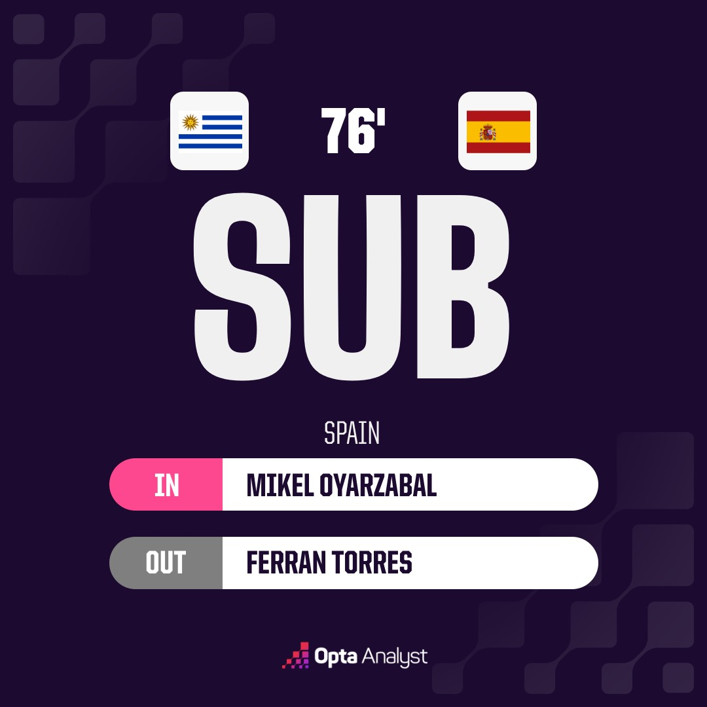
76'
Lamine Yamal’s match is over as Spain decide to make a substitution. Nico Williams enters the field in what looks like a tactical change.
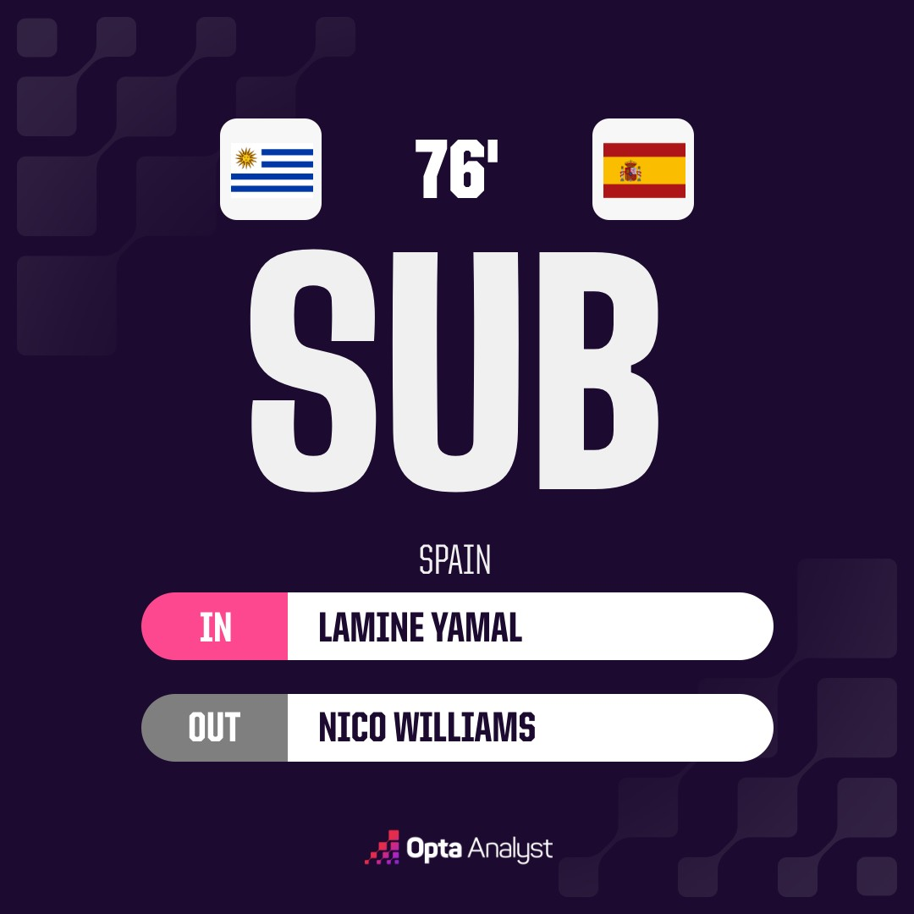
76'
A rash challenge from Mathías Olivera, who sends Dani Olmo tumbling, giving Spain a free-kick. It is not in a threatening position, but it gives them a chance to get back on the ball.
76'
Spain have had more of the ball with 75 minutes played, with 70.29% possession compared to Uruguay’s 29.71%. That is not likely to change too much in the final 15 minutes.
75'
A rash challenge from Dani Olmo, who sends Nicolás de la Cruz tumbling, giving Uruguay a free-kick. It is not in a threatening position, but it gives them a chance to get back on the ball.
74'
A free-kick to Uruguay, as Rodri goes in and fouls Federico Viñas. However, Spain will not mind giving one away in this area too much, with plenty of distance to their goal.
74'
Neither team has had a shot in the past 10 minutes, as this match just enters something of a down period. Spain have seen more of the ball, with 63 per cent possession, but Uruguay are keeping them away from goal. There is still a chance the match will spark into life, though.
74'
There is plenty of possession for Spain, with 66.20% compared to Uruguay 33.80% in the last 15 minutes. However, Spain have not been able to turn that dominance of the ball into a goal.
70'
Uruguay are making a tactical change. Juan Sanabria is leaving the field and in their place comes Brian Rodríguez – we will soon see if this switch has the desired impact.
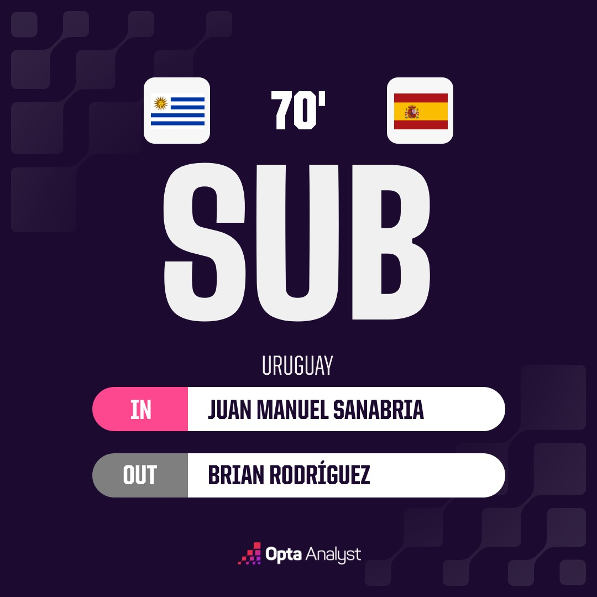
66'
Spain are making a tactical change. Álex Baena is leaving the field and in their place comes Yéremy Pino – we will soon see if this switch has the desired impact.
66'
Free-kick! A foul from Nicolás de la Cruz on Fabián Ruiz. It is well away from Uruguay’s goal, so it is unlikely to result in a chance for Spain.
66'
With 65 minutes gone, it is Spain who lead the shot count, with 5 to Uruguay’s 4. Spain have got , while Uruguay have managed to get 0 on target.
64'
That is a disappointing effort from Federico Viñas, who went for glory but got their attempt wrong, and the shot sailed off target. A frustrating moment for Uruguay.
63'
No luck! Dani Olmo takes on a shot that, had they got it right, might have been set to test the goalkeeper, but instead it is sent off target and Uruguay come away unscathed.
60'
The Spain manager is looking to the substitutes’ bench, bringing on Dani Olmo in place of Mikel Merino. Will the change make a difference? Let’s find out!
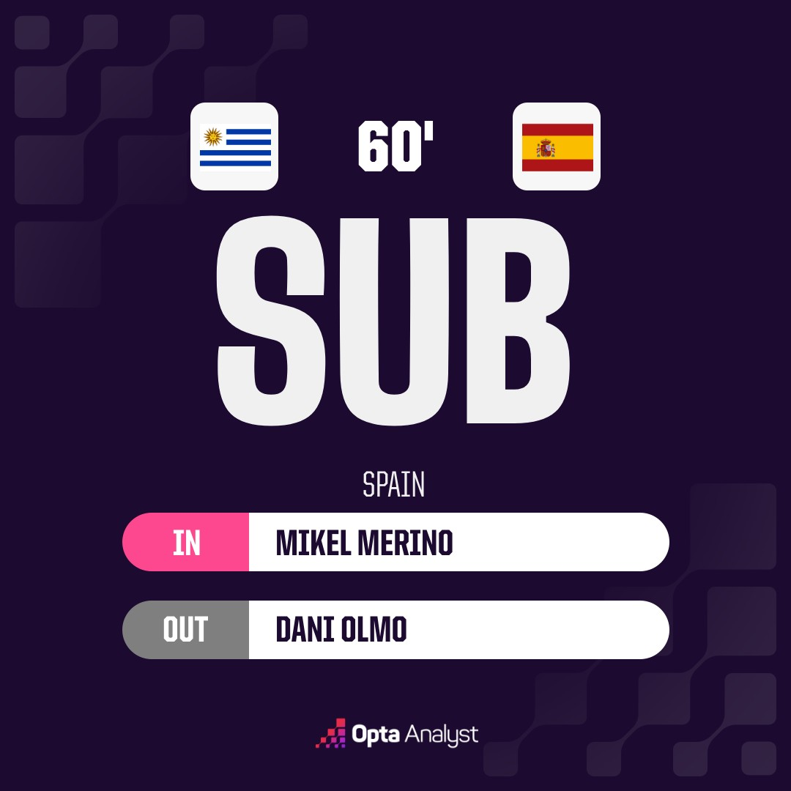
60'
The Spain manager is looking to the substitutes’ bench, bringing on Fabián Ruiz in place of Pedri. Will the change make a difference? Let’s find out!
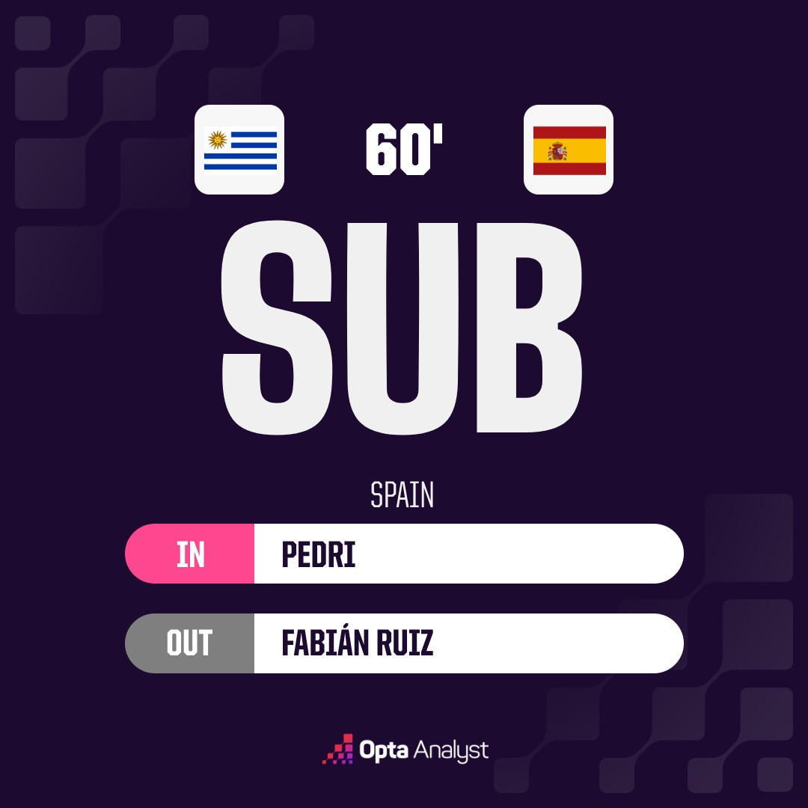
59'
Free-kick! A foul from Rodrigo Bentancur on Mikel Merino. It is well away from Uruguay’s goal, so it is unlikely to result in a chance for Spain.
59'
Plenty of the ball in the last quarter-of-an-hour of this match for Spain, but still Uruguay stand firm, despite having had only 34.88% of the ball in that period. Can Spain make their possessional dominance count?
58'
That is a booking for Guillermo Varela, who has received their first yellow card. They are not happy with the decision, but it is done now, and they will have to be careful for the rest of this game.
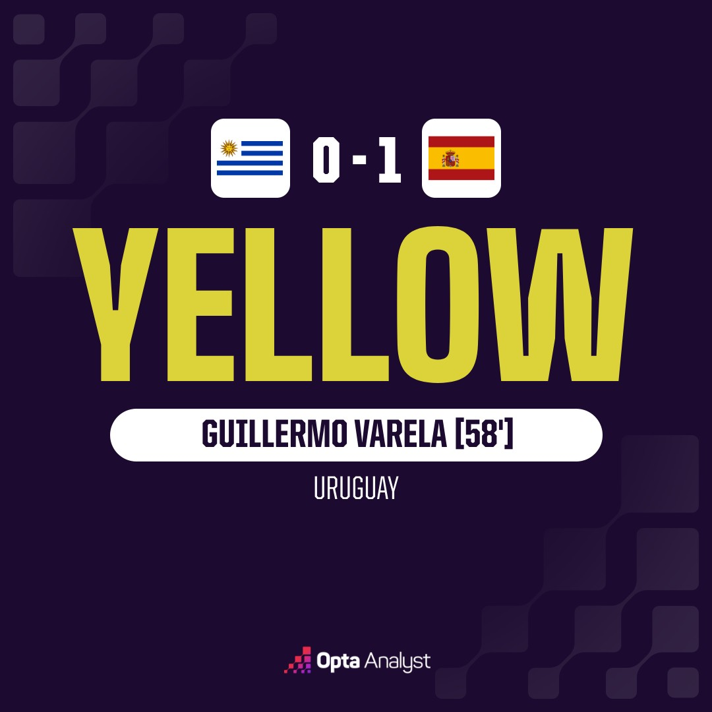
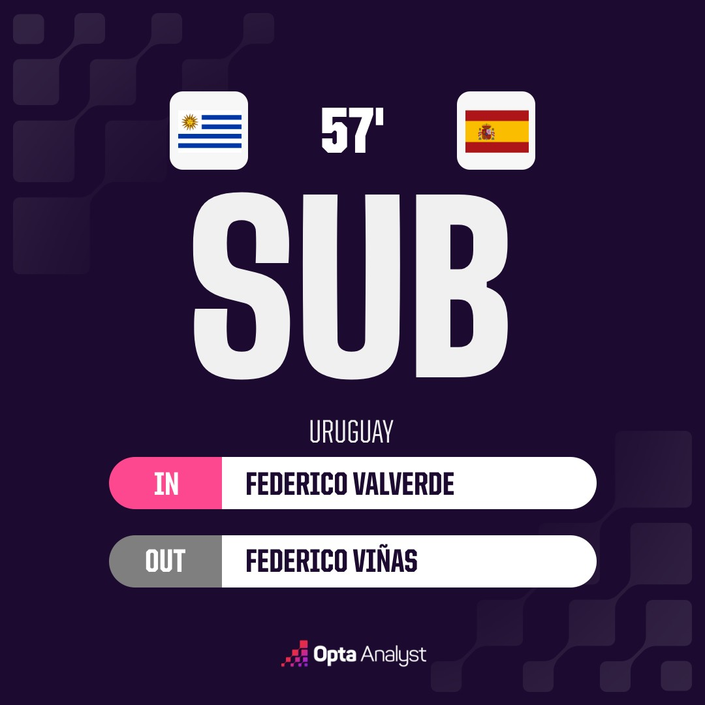
57'
A substitution for Uruguay sees Federico Valverde replaced by Federico Viñas. There does not appear to be any obvious sign of an injury, so that is a tactical switch.
56'
Foul! A free-kick now in a dangerous area for Uruguay, after Maxi Araújo is fouled by Pau Cubarsí. Can Uruguay make the most of this opportunity?
54'
That is a booking for Juan Sanabria, who has received their first yellow card. They are not happy with the decision, but it is done now, and they will have to be careful for the rest of this game.
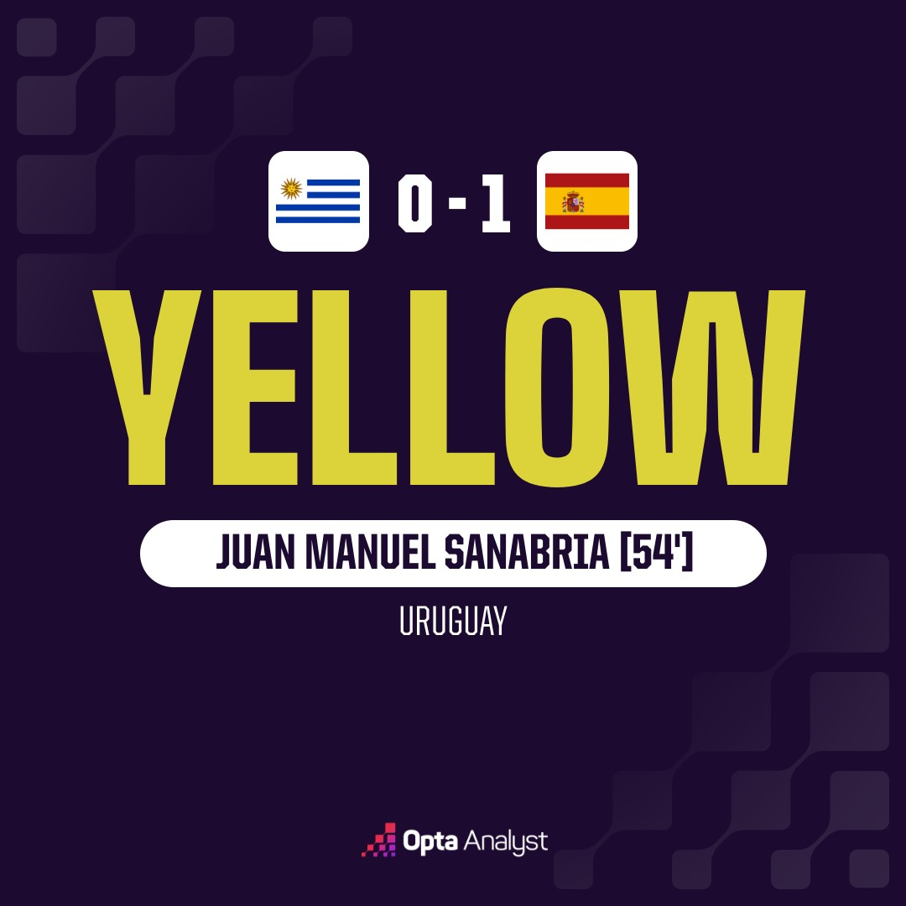
54'
Free-kick! A foul from Juan Sanabria on Lamine Yamal. It is well away from Uruguay’s goal, so it is unlikely to result in a chance for Spain.
48'
The Spain defence steps up in time and there is a frustration for Maxi Araújo, who thought they were through until the flag goes up to signal offside.
46'
A yellow card for Spain's Álex Baena. They will have to walk a tightrope for the rest of this match, and Uruguay will likely look to target them and draw a second bookable offence.
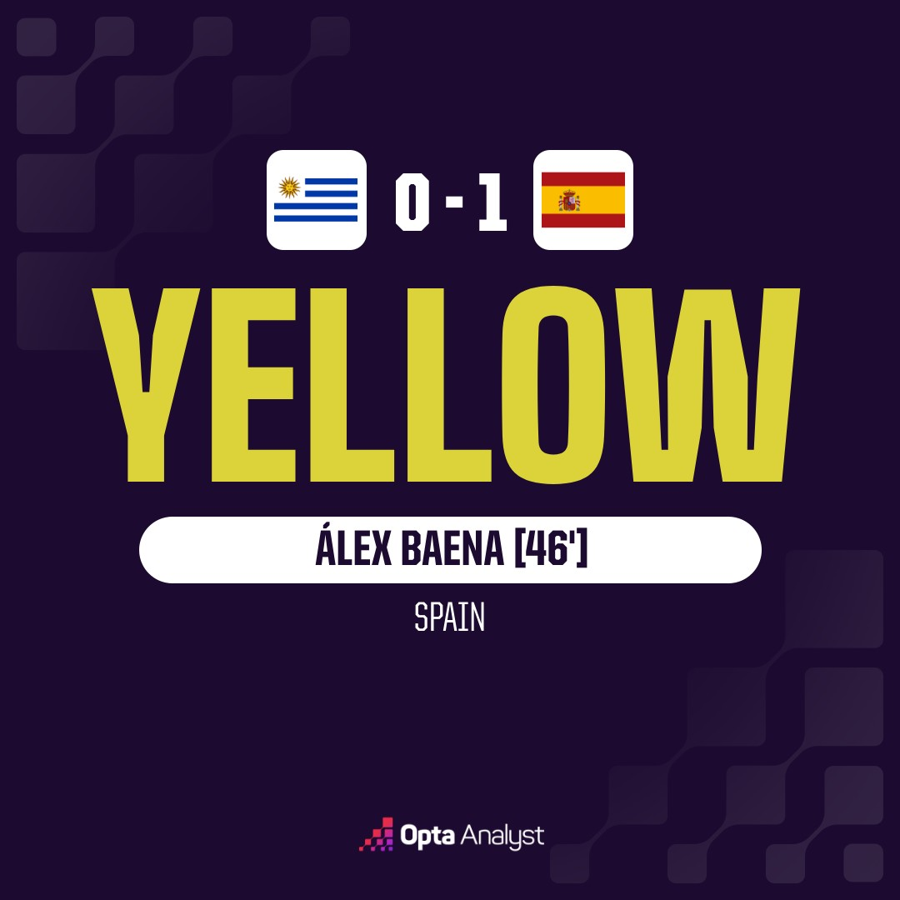
46'
Foul! A free-kick now in a dangerous area for Uruguay, after Agustín Canobbio is fouled by Álex Baena. Can Uruguay make the most of this opportunity?
46'
Free-kick! A foul from Álex Baena on Agustín Canobbio. It is well away from Spain’s goal, so it is unlikely to result in a chance for Uruguay.
46'
A substitution for Uruguay sees Fernando Muslera replaced by Sergio Rochet. There does not appear to be any obvious sign of an injury, so that is a tactical switch.
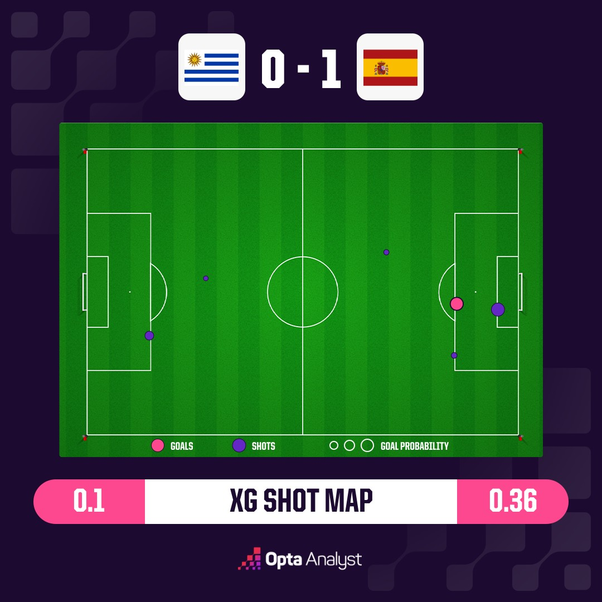
45+9'
Half-time! We reach the interval at Estadio Guadalajara and it is Spain who have a 0-1 lead over Uruguay. Can they hold on and see this out in the second half?
45+8'
That is a disappointing effort from Mikel Oyarzabal, who went for glory but got their attempt wrong, and the shot sailed off target. A frustrating moment for Spain.
45+8'
Excellent defensive work from Spain; their organization and success in key duels are effectively safeguarding their lead.
45+7'
Not much goalmouth action to speak of in this period of the game, with no attempts made from either side. This game could spark at any moment, however. It is Spain who have had more of the ball, controlling 55 per cent possession in the last 10 minutes.
45+6'
Foul! A free-kick now in a dangerous area for Uruguay, after Maxi Araújo is fouled by Mikel Merino. Can Uruguay make the most of this opportunity?
45+5'
A rash challenge from Rodrigo Bentancur, who sends Pedri tumbling, giving Spain a free-kick. It is not in a threatening position, but it gives them a chance to get back on the ball.
45+2'
A free-kick to Spain, as Agustín Canobbio goes in and fouls Pedri. However, Uruguay will not mind giving one away in this area too much, with plenty of distance to their goal.
45+1'
Maxi Araújo makes a run in behind but the Spain defensive line were alert, and stepped up in time to catch them offside. That run just needed to be timed better.
45+1'
Free-kick! A foul from Pedri on Guillermo Varela. It is well away from Spain’s goal, so it is unlikely to result in a chance for Uruguay.
45+1'
That is bad news for Uruguay, as they suffer an injury blow, with Manuel Ugarte having had to receive treatment before then making their way off the pitch. Nicolás de la Cruz is coming on.
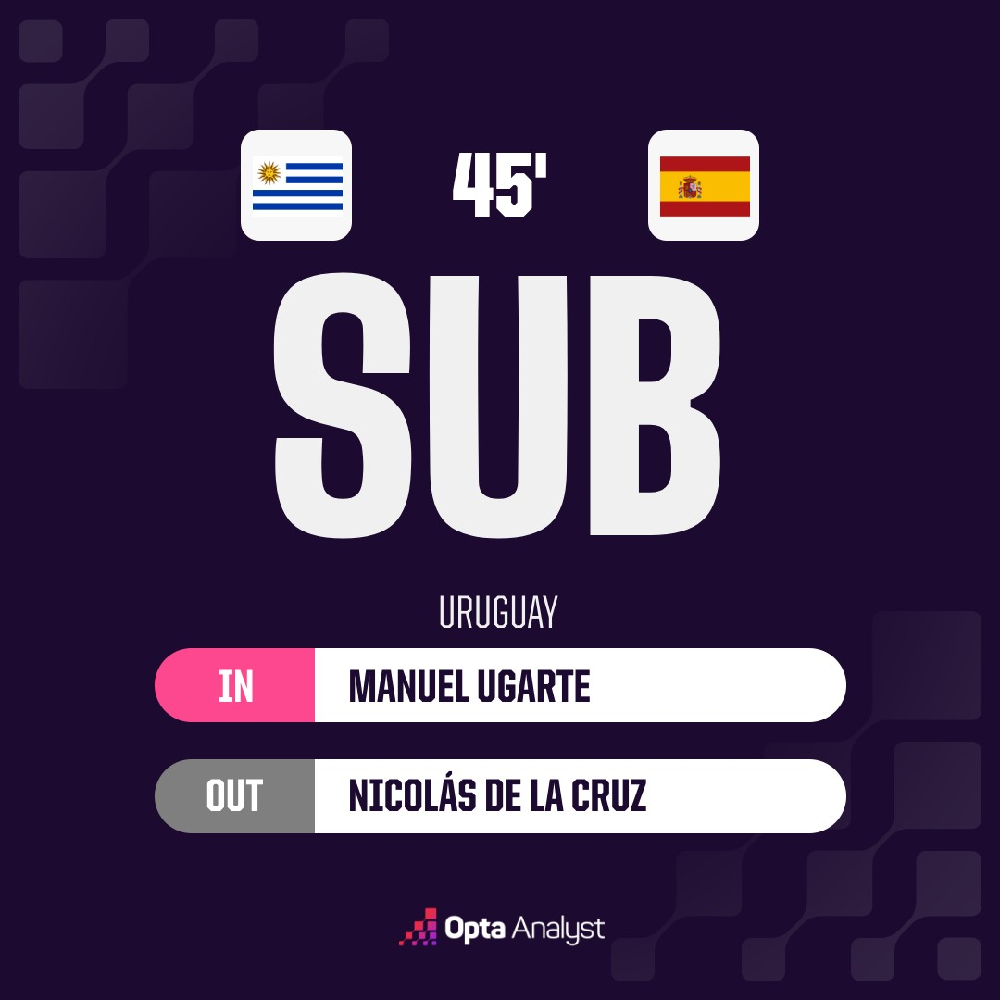
42'
Marcos Llorente has assisted his first goal in the 2026 FIFA World Cup.
42'
Álex Baena has scored his first goal in the 2026 FIFA World Cup.
42'
GOAL! Spain have scored and it is Álex Baena who has put them in the lead! Álex Baena applies the finish and while that is not game over for Uruguay, they have plenty of work to do now! We will see if that strike proves to be the winner!
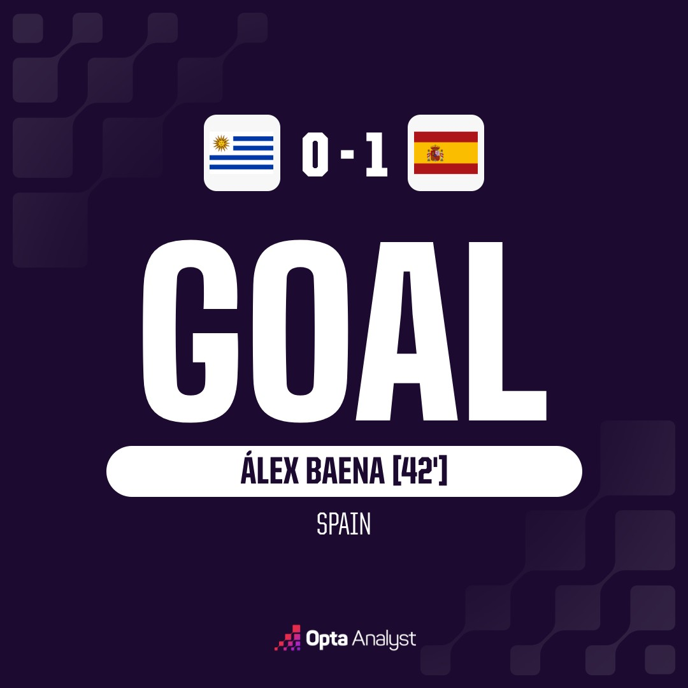
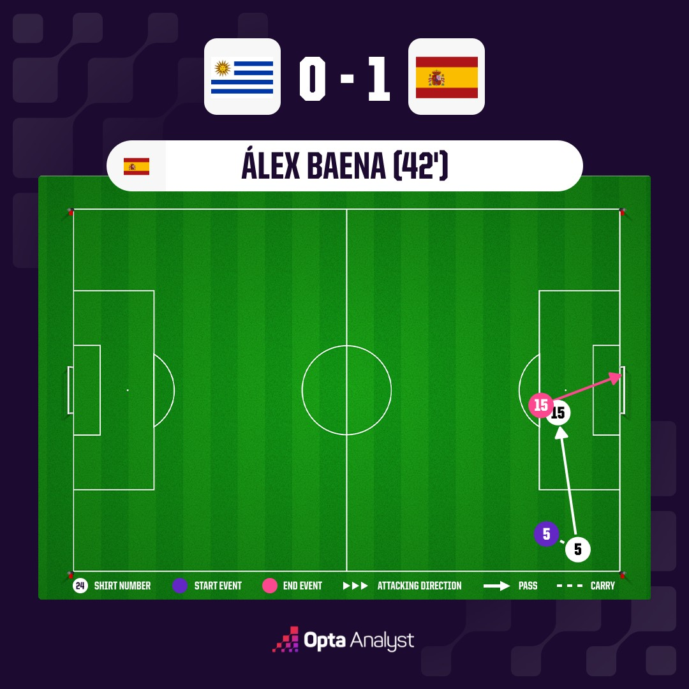
41'
Uruguay have not had a shot on target so far in this game.
39'
No luck! Darwin Núñez takes on a shot that, had they got it right, might have been set to test the goalkeeper, but instead it is sent off target and Spain come away unscathed.
37'
A rash challenge from Marcos Llorente, who sends Maxi Araújo tumbling, giving Uruguay a free-kick. It is not in a threatening position, but it gives them a chance to get back on the ball.
36'
That is a disappointing effort from Rodrigo Bentancur, who went for glory but got their attempt wrong, and the shot sailed off target. A frustrating moment for Uruguay.
35'
There is plenty of possession for Spain, with 74.21% compared to Uruguay’s 25.79% in the last 15 minutes. However, Spain have not been able to turn that dominance of the ball into a goal or even a shot during the period – which will be a huge frustration for their coach.
32'
Great block from Pedri, as they get in the way of an attempt from Agustín Canobbio that might have been set to cause the goalkeeper some problems. Solid defending from the Spain player.
32'
There is plenty of possession for Spain, with 74.29% compared to Uruguay 25.71% in the last 15 minutes. However, Spain have not been able to turn that dominance of the ball into a goal.
32'
Álex Baena goes in on Agustín Canobbio and concedes a foul. The free-kick is not in a particularly dangerous area from Spain’s viewpoint, though.
30'
This game is certainly in a bit of a lull now, with neither team having had an attempt at goal in the past 10 minutes. It could do with something to spark it into life. Spain have had more possession during the quiet spell, but are yet to do much with it.
20'
That is a disappointing effort from Pau Cubarsí, who went for glory but got their attempt wrong, and the shot sailed off target. A frustrating moment for Spain.
17'
Spain have had plenty of the ball in the last 15 minutes, with 72.05% possession compared to just 27.95% for their opponents. However, there’s not been any goal to come from that possessional dominance just yet.
17'
Shot blocked! Lamine Yamal unleashes an attempt at goal, but the ball does not reach its target thanks to Rodrigo Bentancur, who makes a solid block to stem the danger – for now.
16'
A chance now for Spain to get a good delivery into the box, after the ball is diverted behind for a corner. Spain have been pushing for what would be a key goal, but Uruguay have stood firm so far.
16'
Plenty of the ball in the last quarter-of-an-hour of this match for Spain, but Uruguay have been able to hold them off with ease, with Spain having failed to even muster a shot at goal.
13'
Rodrigo Bentancur goes in on Pedri and concedes a foul. The free-kick is not in a particularly dangerous area from Uruguay’s viewpoint, though.
12'
A free-kick to Uruguay, as Álex Baena goes in and fouls Agustín Canobbio. However, Spain will not mind giving one away in this area too much, with plenty of distance to their goal.
12'
Darwin Núñez makes a run in behind but the Spain defensive line were alert, and stepped up in time to catch them offside. That run just needed to be timed better.
11'
The Uruguay defence steps up in time and there is a frustration for Lamine Yamal, who thought they were through until the flag goes up to signal offside.
11'
A lull in this match, as the teams prob and probe, but without much success. It has been 10 minutes since there was an attempt from either side, though Spain are seeing more of the ball, with 77 per cent possession to Uruguay’s 23 per cent during that time.
8'
Corner! The ball goes behind and now Spain will aim to deliver a good ball into the penalty area and test that Uruguay defence, which has been frustrating them in recent minutes.
6'
It’s been tight so far, and Spain are making sure it stays that way with strong defensive discipline and well-timed clearances.
6'
This could be a chance for Uruguay, after Mikel Merino fouls Rodrigo Bentancur, handing them a free-kick in a threatening area. A good set-piece from here could really test the Spain defense!
4'
Free-kick! A foul from Aymeric Laporte on Darwin Núñez. It is well away from Spain’s goal, so it is unlikely to result in a chance for Uruguay.
1'
Kick-off! Up and running at Estadio Guadalajara, with Spain getting the ball rolling. Who will come out on top?
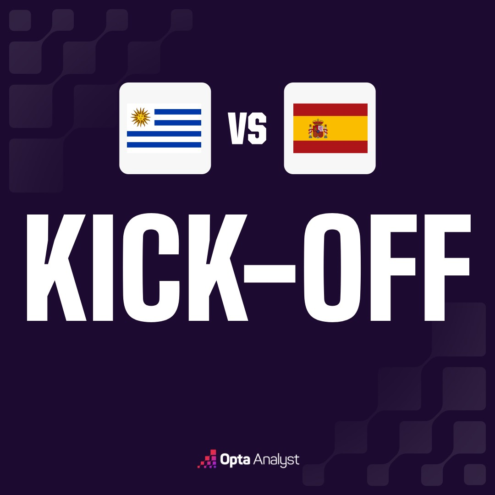
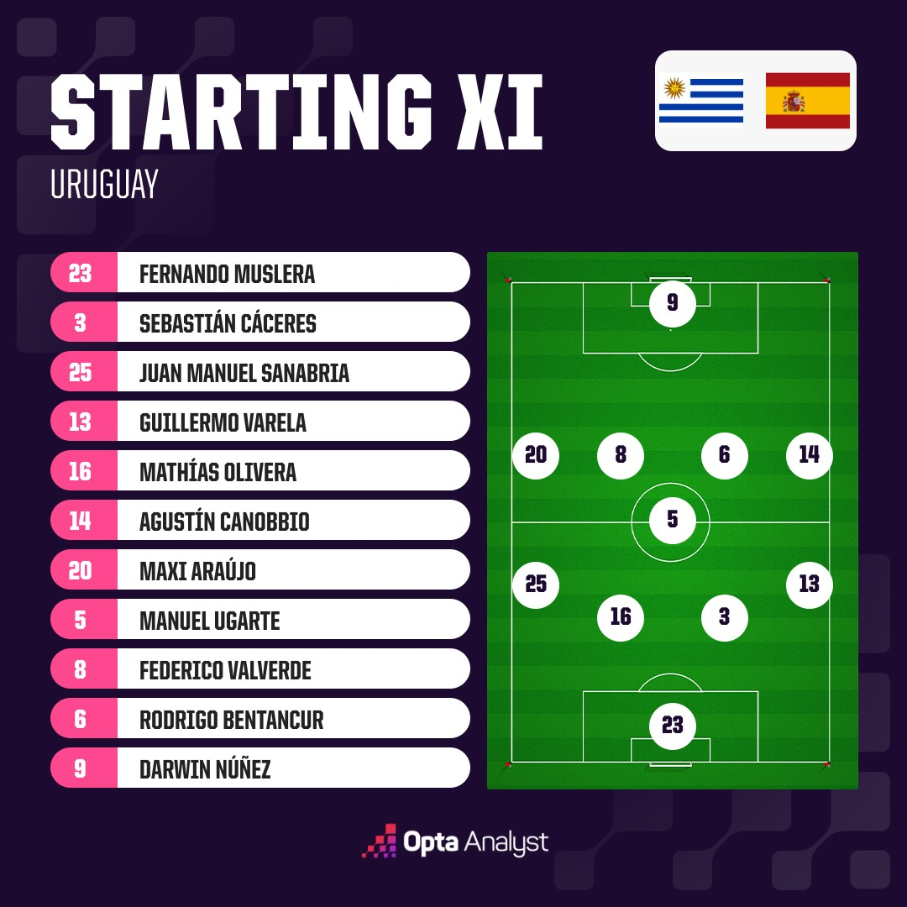
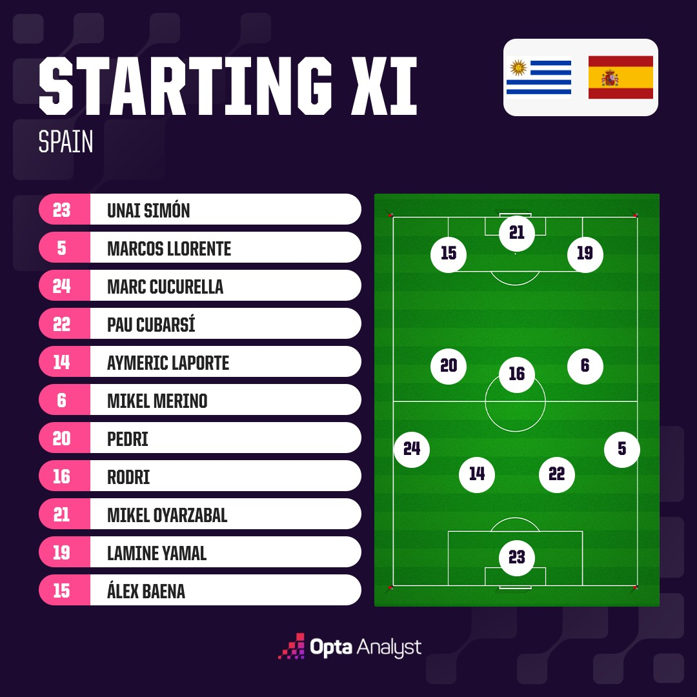
Fernando Muslera is making his 19th appearance in the FIFA World Cup.
Uruguay have drawn their last 3 matches in a row
Spain have kept a clean sheet in the last 3 away matches
M. Araújo has scored in the last 2 games for Uruguay
Uruguay play Spain on Friday at Estadio Guadalajara for a FIFA World Cup group stage match between two in-form teams looking to clinch a place in the Round of 32.
Uruguay played out a 2-2 draw in their last group stage match against Cabo Verde on June 21. Maxi Araújo and Agustín Canobbio scored in the draw. They are winless in their last six games in all competitions.
Spain's last group stage game saw them triumph for the first time in the competition this year, winning 4-0 over Saudi Arabia on June 21 at Atlanta Stadium, improving their unbeaten streak to 12. Mikel Oyarzabal netted two to lead the scoring.
Spain are top of the group on four points, while Uruguay's two points place them second. Both sides are currently in position for a place in the Round of 32.
Elsewhere in the group, Cabo Verde are third on two points and still in contention for a round of 32 place. Saudi Arabia are facing elimination, sitting fourth on one point.
The last time the teams came up against each other it was Spain who secured a 2-1 victory in June 2013.
Uruguay have been led by Araújo in World Cup play. He leads the team with two goals. Oyarzabal has been the leading attacking threat for Spain, scoring twice in this World Cup campaign.
In their last six matches in all competitions, Uruguay have drawn five and lost one. The Uruguayan side scored five and conceded nine over that period, failing to score first in any of the six contests. A majority of their goals (three) came in the first half, while their opponents netted six times in the first 45 minutes. The Spanish side have won three and drawn three in their last six. The Spanish side scored 11 and conceded two over that stretch, netting first in four of the six. Most of their goals (eight) came in the first half, while their opponents netted only once before the break.
-
General
Possession 33.1% 33.05766.94366.9% Possession lost in defensive half 39 393232 Possession lost in middle third 40 404949 Duels 108 108108108 Duels success rate 47.2% 47.22250.92650.9% Aerial duels 21 212121 Aerial duels won 23.8% 23.8176.1976.2% Successful dribbles 7 799 Fouls won 14 141414 Offsides 5 522 Corner awarded 1 166 -
Distribution
Passes 301 301622622 Long passes 43 433434 Long passes proportion (%) 14.3% 14.2865.4665.5% Passing accuracy 75.7% 75.74888.90788.9% Passes in opponents' half 182 182271271 Passing accuracy in opponents' half (%) 68.7% 68.68183.39583.4% Total passes in the final third 105 105108108 Passing accuracy in final third (%) 65.7% 65.71472.22272.2% Forward passes 185 185371371 Forward passes (%) 61.5% 61.46259.64659.6% Through balls 3 311 Final third entries 42 424747 Penalty area entries 21 212222 Total open play crosses 11 1166 Crosses 16 161212 Crossing accuracy 6.3% 6.252525.0% -
Attack
Goals 0 011 Shots 5 566 Shots on target 1 111 Blocked shots 1 111 Headed shots 0 011 Shots outside the box 3 311 Shots inside the box 2 255 Shots accuracy excluding blocked shots 25.0% 252020.0% Shooting accuracy 20.0% 2016.66716.7% Key Passes 5 566 -
Defence
Tackles 25 251717 Tackles success rate 60.0% 6058.82458.8% Clearances 14 142323 Interceptions 14 1499 Recoveries 51 515151 Attacking third recovery 11 1155 Defensive third recovery 25 252929 Midfield third recovery 15 151717 Recoveries in attacking half (%) 21.6% 21.5699.8049.8% -
Discipline
Fouls conceded 14 141414 Yellow cards 3 311 Red cards 1 100